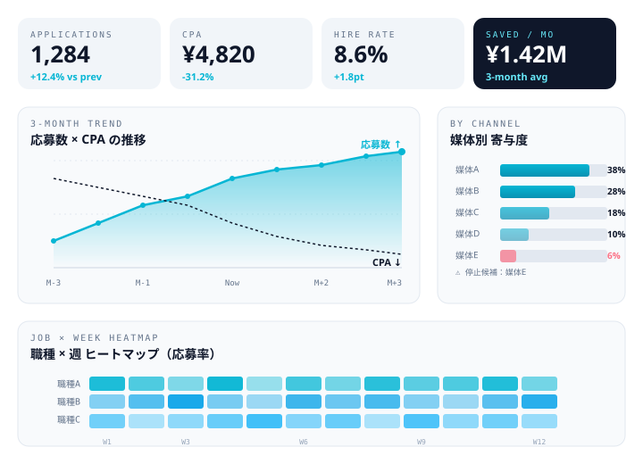
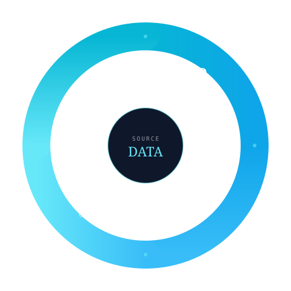

レポートは届くが、
「何を意思決定すべきか」が書かれていない。
毎月送られてくるレポートには、応募数・CPA・採用数が並ぶ。けれど、来月の打ち手は載っていない。担当者の頭の中だけに、次のアクションが残されている。
レポートは届いている。
ただ、「で、次に何をするか」は、
いつも担当者の頭の中にしかない。
aggregateは、採用データを媒体・原稿・職種・期間の4軸で分解し、
次のアクションまでをセットで提示します。

aggregateが提供するダッシュボードは、媒体・原稿・職種・期間の4軸で38指標を整理。下記は主要KPIの抜粋です。
媒体ごとの数字、原稿ごとの応募数、月次のCPA。データはある。でも、そのデータをどう次の改善に変えるかが、いつも担当者の頭の中だけに残ってしまう。
採用データの取り扱いに、共通する4つのつまずきがあります。
毎月送られてくるレポートには、応募数・CPA・採用数が並ぶ。けれど、来月の打ち手は載っていない。担当者の頭の中だけに、次のアクションが残されている。
媒体A、媒体B、媒体C。それぞれ違うUIで、違う数字の出し方。横串で比較する仕組みがないから、判断材料は毎月Excelに転記される。
数字を読む力は、現場の暗黙知になりがちだ。「この数字が動いたら、ここを見る」というナレッジが、ドキュメントとして残っていない。
レポートは出る。原稿差替も行う。けれど「分析の結果が、本当に改善につながったか」を後追いで確認する仕組みは、ほとんどの組織にない。
「見る」だけのデータから、「動かす」ためのデータへ。aggregateの分析支援は、4ステップで設計されています。

過去データから「下げる/上げる指標」を特定。月次目標を媒体・原稿・職種ごとに設定し、改善仮説を文章で残します。
仮説に基づいた配分変更・原稿差替・CTA改善を実施。「いつ、何を、なぜ変えたか」をログとして記録します。
変更前後の指標を媒体・原稿・職種・期間で比較。仮説が当たったか / 外れたかを、数字とコメント両方で残します。
当たった仮説は標準化、外れた仮説は原因分析。学びをナレッジ化し、次の月のPLANにつなげます。
aggregateが標準で追跡する38指標のうち、月次レビューで頻出する代表7指標を抜粋しました。
レポートは届いて終わり、ではありません。aggregateの月次レビューでは、数字の読み方と次の打ち手を、その場で会話して固めていきます。